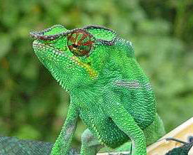

Furcifer Pardalis


Furcifer Pardalis ou Caméléon panthère, c’est une espèce de sauriens endémique de Madagascar. Le Caméléon panthère est l’un de plus grands Caméléons du monde, il mesure en général dans les 45cm. L'animal est caractérisé par ses yeux indépendamment mobiles, c’est-à-dire que ses yeux peuvent regarder dans de directions différentes, cette faculté lui permet de repérer rapidement et efficacement ses proies, en général, le Caméléon panthère mange des insectes. La couleur de l’animal varie selon les régions dans lesquels il se trouve…